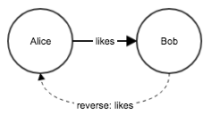

1. Setup
pip install pyvgxIf you want to install the Docker Image instead, or use a different package repository than PyPI, see how to install.
2. Introduction
This tutorial describes pyvgx, a Python module for building and querying graph structures, like this:
import pyvgx
# Make some friends
graph = pyvgx.Graph( "friends" )
graph.Connect( "Alice", "knows", "Bob" )
graph.Connect( "Alice", "knows", "Charlie" )
graph.Connect( "Alice", "knows", "Diane" )
graph.Connect( "Charlie", "likes", "coffee" )
# Which of Alice's friends likes coffee?
graph.Neighborhood(
"Alice",
arc = "knows",
neighbor = {
'arc' : "likes",
'neighbor' : "coffee"
}
)2.1. Hello World Service
To create a useful service you must write at least one plugin to perform the required graph operations.
Here is a complete implementation of a basic hello world service.
from pyvgx import *
system.Initialize( "hello", http=9000 )
def hello( request:PluginRequest, message:str ):
return "Hello, you said '{}'".format( message )
system.AddPlugin( hello )http://127.0.0.1:9000/vgx/plugin/hello?message=hi
{
"status": "OK",
"response": "Hello, you said 'hi'",
"level": 0,
"partitions": null,
"exec_ms": 0.061
}2.2. Quick Note about Multithreading
Don’t worry about the Python GIL.
PyVGX is a wrapper around a lower-level library called vgx written in C.
All features of the C library are exposed to Python via pyvgx. When you call API methods like
Connect() and Neighborhood() in the example above, the calling thread leaves the Python
interpreter and continues execution within the vgx core until the operation completes.
This means multiple threads can execute simultaneously, even when those threads originate
in the Python interpreter as part of your Python code.
| Try to minimize the amount of pure Python you write to implement algorithms, especially loops and time consuming operations on Python objects such as lists and dictionaries. Instead, learn the pyvgx API and see if you can find ways to construct queries to perform all the work for you. Pyvgx includes an expression language for use in graph queries and gives access to platform native memory arrays which let you write efficient algorithms that bypass the Python interpreter. |
3. Getting Started
At this point you should have Python and pyvgx installed on your system, either running in a Docker image or installed directly on your system.
Let’s start the Python interpreter and make a graph.
3.1. Import, Initialize and Make a New Graph
# Import the contents of pyvgx
from pyvgx import *
# Initialize pyvgx by declaring a home directory for data
system.Initialize("data/graph")
# Create a new graph (or restore from disk if it already exists)
g = Graph( "testgraph" )After running these statements we have a graph object g to play with.
Let’s insert two persons, Alice and Bob, using the CreateVertex() method:
g.CreateVertex( "Alice", type="person" )
g.CreateVertex( "Bob", type="person" )3.2. Make a Connection
Next, we connect the two persons with a likes relationship using the Connect() method:
g.Connect( "Alice", "likes", "Bob" )This inserts a directed edge of type likes from Alice to Bob. In pyvgx all edges are directed. A directed edge is commonly referred to as arc.
The arc created above has no attributes aside from its type name (likes). It is possible for an arc to also have a value and sometimes automatic behaviors. We will see examples later.
You will see this notation used to express a relationship: Alice→[likes]→Bob
3.3. Initial and Terminal Vertices
We will use the terms vertex and node interchangeably. They mean the same thing. When talking about connected nodes in a directed graph we refer to the start node as the initial (or tail vertex) and the end node as the terminal (or head vertex).
Above, Alice is the initial/tail and Bob is the terminal/head for the likes arc. If Bob also likes Alice we could insert another arc going the opposite direction. This would reverse the initial/terminal vertex roles for that arc. We only refer to initials and terminals in relation to the arc that connects them.
|
Be aware that inserting an arc implicitly creates another hidden reverse arc. This is necessary to allow reverse relationship lookup in queries. You should NOT create the reverse arc yourself, that would be a waste of system memory. It is not necessary to explicitly create the reverse arc in order to traverse in reverse. (If you did there would be four arcs between the nodes!) It is possible to suppress creation of the implicit reverse arc via the constants/arcModifierConstants.html modifier bitmask.

Figure 1. Implicit reverse arc
|
3.4. Arcs and Degree
Vertices are connected by arcs. The arcs originating at a vertex are called outarcs. The arcs arriving at a vertex from somewhere else are called inarcs. The number of outarcs leaving a vertex is the vertex outdegree. The number of inarcs entering a vertex is the vertex indegree. The total number of arcs of any direction incident on a vertex is the vertex degree.
For example, vertex B below has three outarcs and two inarcs, and therefore outdegree=3, indegree=2 and degree=5.
When an initial vertex is connected to a terminal with exactly one arc we call this arc a simple arc. An initial vertex can also be connected by more than one arc to the same terminal. We call this a multiple arc. The degree accounts for all individual arcs, including each member of a multiple arc. For example, A above has a multiple arc to C.
Vertices are sometimes classified according to their inarcs and outarcs. A vertex with one or more outarcs but no inarcs is called a source. In the figure above A is the only source. A vertex with one or more inarcs but no outarcs is called a sink. In the figure above C and D are sinks. A vertex with both inarcs and outarcs is called internal. In the figure above B and E are internal. A vertex with no arcs is called isolated. In the figure above F is the only isolated vertex.
3.5. Virtual and Real Vertices
In pyvgx vertices are either real or virtual. A vertex created explicitly with CreateVertex() or NewVertex() is a real vertex. However, it is possible to create a new node in the graph implicitly by connecting an arc from an existing node to another node that does not already exist. I.e. when Connect() specifies a non-existent terminal, the terminal will be implicitly created as a virtual vertex. The terminal is created only to serve as a destination for the arc.
If the initial vertex does not exist (or exists as a virtual vertex) Connect() will implicitly create a real vertex (or convert the virtual to real.) In this case the vertex will have no type, just as if CreateVertex() were called prior to Connect() without a type parameter.
For example:
# "Alice" and "Bob" already exist and are connected
# Implicitly create "Charlie" as VIRTUAL
g.Connect( "Alice", "visits", "Charlie" )
# "Charlie" becomes REAL, "coffee" is new VIRTUAL
g.Connect( "Charlie", "drinks", "coffee" )Our graph now looks like this:
The type of a typeless vertex is the reserved string "__vertex__".
|
A virtual vertex automatically disappears from the graph when it no longer has any inarcs. If Charlie no longer drinks coffee then once the drinks arc is disconnected coffee is automatically deleted. However, if Alice no longer visits Charlie then once the visits arc is disconnected Charlie will still continue to exist.
Another scenario arises if Charlie is explicitly removed. When Charlie is deleted all of Charlie's outarcs are also removed, which means coffee will be deleted too. However, since Charlie has inarcs it will continue to exist in the graph to serve as destination for Alice's visits. Charlie is therefore converted to virtual. In other words, deleting a node from the graph will remove the node’s outarcs but will not remove the node’s inarcs. If the deleted node has inarcs then the node will remain in the graph as a virtual node.
# Charlie is converted to virtual
g.DeleteVertex( "Charlie" )3.6. Run a Simple Query
Let’s see how Alice is connected:
g.Neighborhood( "Alice" )This query returns all of Alice's outarcs. The result of the query looks like this:
[ 'Bob', 'Charlie' ]4. A More Complex Graph
We will now create the graph shown below and run some queries.
4.1. Create the Graph
The following code will generate the graph shown in the picture above (with some random elements.) Notice how most Persons and Companies will be connected to Coffee or Tea through drinks and purchased relationships.
(You should be able to copy-paste this entire code snippet and run it.)
# ======== Let's create all the vertices first ========
# Person P0-P99999
for n in range( 100000 ):
r = g.CreateVertex( "P%d" % n, type="person" )
# Company C0-C99
for n in range( 100 ):
r = g.CreateVertex( "C%d" % n, type="company" )
Alice = g.NewVertex( "Alice", type="person" )
Bob = g.NewVertex( "Bob", type="person" )
g.Connect( Alice, "visits", "Charlie" )
Charlie = g.OpenVertex( "Charlie" )
Coffee = g.NewVertex( "Coffee", type="product" )
Tea = g.NewVertex( "Tea", type="product" )
Joes = g.NewVertex( "Joe's", type="shop" )
# ======== Hook up everything as shown in the diagram above ========
g.Connect( Alice, "likes", Bob )
g.Connect( Bob, "drinks", Coffee )
g.Count( Bob, "purchased", Coffee )
g.Count( Bob, "purchased", Coffee )
g.Count( Bob, "purchased", Coffee )
g.Connect( Charlie, "drinks", Tea )
g.Count( Charlie, "drinks", Tea, 17 )
# Some random behaviors
import random
random.seed( 1234 )
# Person P0-P99999 behavior
for n in range( 100000 ):
Pn = "P%d" % n
if random.random() > 0.1:
r = g.Connect( Pn, "drinks", Coffee )
how_many = int(random.lognormvariate(2,0.5))
r = g.Count( Pn, "purchased", Coffee, how_many )
if random.random() > 0.3:
r = g.Connect( Pn, "drinks", Tea )
how_many = int(random.lognormvariate(2,0.5))
r = g.Count( Pn, "purchased", Tea, how_many )
# Company C0-C99 behavior
for n in range( 100 ):
Cn = "C%d" % n
how_many = int(random.lognormvariate(6,0.3))
r = g.Count( Cn, "purchased", Coffee, how_many )
how_many = int(random.lognormvariate(6,0.2))
r = g.Count( Cn, "purchased", Tea, how_many )
g.Connect( Joes, "sells", Coffee )
g.Connect( initial=Joes, arc=("price",M_FLT,2.99), terminal=Coffee )
g.Connect( Joes, "sells", Tea )
g.Connect( Joes, ("price",M_FLT,1.79), Tea )
g.CloseAll()This example uses NewVertex() and OpenVertex() to acquire the vertices and return vertex objects that can later be used with other graph methods. Most graph methods that take an identifier string as argument can also take a Python Vertex object in its place. Not only is this more efficient for repeated uses of the vertex but it also ensures the operations will succeed (and not time out) since the vertices are already acquired by the current thread. When all operations have completed we use CloseAll() to release (and commit) all open vertices. This makes the vertices available for other threads.
The example also illustrates how to create arcs with values using the general syntax:
arc = ( [ <relationship> [ , <modifier> [ , <value> ] ] ] )
4.2. Run Some Queries
We are now ready to run a few search queries on the graph. Some commonly used query methods are:
-
Neighborhood(): Search the vertices adjacent to an anchor vertex. -
Vertices(): Search all vertices in a graph. -
Aggregate(): Count the number of adjacent vertices and the total sum of numeric properties of the neighborhood such as relationship values and vertex degree.
A complete description of all query methods can be found in the query methods reference.
4.2.1. Query 1: Who purchased the most Coffee?
top5_coffee = g.Neighborhood(
id = "Coffee",
arc = ("purchased", D_IN, M_CNT),
neighbor = {'type' : 'person'},
result = R_DICT|R_METAS,
fields = F_ID|F_VAL,
hits = 5,
sortby = S_VAL|S_DESC
)This query performs a neighborhood search around Coffee looking for all inbound (D_IN) purchased relationships with the counter modifier (M_CNT) originating at a vertex of type person, and returns those with the highest value for the purchased counter.
The result is a sorted list (S_VAL) of dictionaries (R_DICT), each containing the vertex id (F_ID) and the purchased counter value (F_VAL).
Several pre-defined pyvgx constants, such as D_IN, M_CNT, and S_VAL, are used in the query. D_IN stands for "direction = inbound", M_CNT stands for "value modifier = counter", and S_VAL stands for "sort by relationship predicator value."
Predicator is sometimes used to describe the whole of the relationship type (e.g. "purchased") along with its modifier (e.g. M_CNT) and its value (e.g. 20).
The M_CNT modifier has automatic behavior in that Connect() increments the arc value by a specified amount, whereas M_INT or M_FLT assign a value. Other modifiers with automatic behavior include M_ACC and M_TMX. The latter is used to expire a relationship at a future point in time.
The arc= parameter takes a predicator. Not all parts of the predicator have to be supplied. We will see a few variants in the next queries below.
4.2.2. Query 2: How much do Companies spend on Tea?
#
tea_price = g.ArcValue( "Tea", ("price",D_IN), "" )
tea_purchases = g.Aggregate(
"Tea",
arc = ("purchased",D_IN,M_CNT),
neighbor = {'type':'company'}
)['predicator_value']
total = tea_price * tea_purchasesHere we use two queries to gather the information needed to answer the question.
First, we get the price of Tea as sold by Joe’s shop using the ArcValue() method.
Second, we get the total number of tea purchases made by companies using Aggregate() to compute the sum of all predicator values in those arcs matching the full set of filter conditions.
Finally, we multiply the two results to get the total cost of tea purchased by companies.
It is also possible to compute the same result in a single query:
total = g.Neighborhood(
id = "Joe's",
arc = "price",
filter = "do( store(R1,next.arc.value), store(R2,0) )",
neighbor = {
'id' : "Tea",
'arc' : ("purchased",D_IN),
'collect' : C_SCAN,
'neighbor' : {
'type' : 'company',
'filter' : "add( R2, prev.arc.value*load(R1) )"
}
},
select = "sum=load(R2)",
result = R_SIMPLE
)[0]['sum']Although for this example the single query is more complex than the first example running two queries, it illustrates how the expression language and memory arrays can be used to construct powerful search queries.
4.2.3. Query 3: How Many People Purchased at Least 20 Coffees and 20 Teas?
result = g.Aggregate(
id = "Coffee",
arc = ("purchased",D_IN,M_CNT,V_GTE,20),
neighbor = {
'type' : 'person',
'arc' : ("purchased",D_OUT,M_CNT,V_GTE,20),
'neighbor' : {
'id':'Tea'
}
}
)
# Persons who purchased both coffee and tea at least 20 times
print( result['aggregation']['neighbors'] )
# Total number of coffees purchased by these persons
print( result['aggregation']['predicator_value'] )This query uses nested neighborhood conditions. For example, you can filter on a neighbor’s relationship to other neighbors. You may nest up to 15 neighbor conditions.
For example, you could ask "Show me all of my friends who purchased a device made by Apple in the last 30 days." In fact, we’ll do just that in another example below after we construct a different graph.
4.2.4. Query 4: Who Purchased More than 30 Coffees, But No Tea?
only_coffee_drinkers = g.Neighborhood(
id = "Coffee",
result = R_DICT,
fields = F_ID,
arc = ("purchased",D_IN,M_CNT,V_GT,30),
filter = "next.type == 'person'",
neighbor = (False,{
'arc' : ("purchased",D_OUT),
'neighbor' : 'Tea'
})
)This query shows how to specify a negative condition. It starts traversal at Coffee and requires a purchased value > 30 coming from a person, and that person must not have a purchased arc going to Tea. The neighbor= condition is a tuple (False, {…}) to indicate the negative condition.
5. Another Complex Graph
Let’s construct a graph with people, products and manufacturers:
Here we have a mix of various products and their manufacturers, along with a population of people, some of whom are friends of the "Me" person.
Let’s create a population of 1,000,000 people who have made purchases at some point in the last year. The "Me" person knows 500 of these people.
g = Graph("friends")
DEVICES = [
("iPhone", "Apple"),
("iPad", "Apple"),
("Galaxy", "Samsung"),
("Xperia", "Sony"),
("Nexus", "Google"),
]
FOODS = [
("Twinkies", "Hostess"),
("Peanuts", "Planters"),
("Soup", "Campbell"),
("Soup", "Progresso"),
("Stew", "Progresso")
]
def make_people( how_many ):
for n in xrange( how_many ):
g.CreateVertex( "Person_%d" % n, type="person" )
def employ_people( how_many ):
companies = list(set([ mfg for thing,mfg in DEVICES+FOODS ]))
for n in xrange( how_many ):
company = companies[ random.randint(0,len(companies)-1) ]
g.Connect( "Person_%d" % n, "works_at", company )
def make_devices():
for device, manuf in DEVICES:
D = g.NewVertex( device, type="device" )
product = "P_%s" % device
P = g.NewVertex( product, type="product" )
g.Connect( D, "is_a", P )
g.Connect( manuf, "makes", P )
def make_foods():
for food, manuf in FOODS:
F = g.NewVertex( food, type="food" )
product = "P_%s" % food
P = g.NewVertex( product, type="product" )
g.Connect( F, "is_a", P )
g.Connect( manuf, "makes", P )
def make_friends( how_many, pick_from ):
for n in xrange( how_many ):
pn = random.randint( 0, pick_from-1 )
friend = "Person_%d" % pn
g.Connect( "Me", "knows", friend )
def pick_a_device_maybe():
if random.random() > 0.33:
return DEVICES[ random.randint( 0, len(DEVICES)-1 ) ][0]
else:
return None
def pick_a_food_maybe():
if random.random() > 0.33:
return FOODS[ random.randint( 0, len(FOODS)-1 ) ][0]
else:
return None
def run_shopping( how_many_people ):
for n in xrange( how_many_people ):
person = "Person_%d" % n
device = pick_a_device_maybe()
if device:
when = random.randint( 0, 365 ) # days since purchase
g.Connect( person, ("purchased",M_TMC,when), device )
food = pick_a_food_maybe()
if food:
when = random.randint( 0, 365 ) # days since purchase
g.Connect( person, ("purchased",M_TMC,when), food )
def setup( how_many_people=1000000, how_many_friends=500 ):
make_people( how_many_people )
employ_people( how_many_people / 2 )
make_devices()
make_foods()
g.CreateVertex( "Me", type="person" )
make_friends( how_many_friends, how_many_people )
run_shopping( how_many_people )
setup( 1000000, 500 )There are about 1 million vertices and about 1.8 million arcs is this graph. Now let’s run some queries against it.
| But before we do, notice how we created the seemingly unnecessary via-vertices between manufacturers and the devices and foods they make. This is to illustrate a trick which has a huge performance benefit. When running queries it is much faster to filter on arcs when there are few other arcs of the same direction incident on the vertex. Filtering on a vertex' inarcs is faster when the vertex has few inarcs, while the number of outarcs doesn’t matter. Conversely, filtering on a vertex' outarcs is faster when the vertex has few outarcs, while the number of inarcs doesn’t matter. We’ll see the effect of this in the next query. |
5.1. Query 5: Which of My Friends Purchased an Apple Device in the Last 30 Days?
apple_friends = g.Neighborhood(
id = "Me",
result = R_DICT|R_METAS,
fields = F_ID,
arc = "knows",
neighbor = {
'arc' :("purchased",D_OUT,M_TMC,V_LT,30),
'neighbor':{
'type' :'device',
'arc' :("is_a"),
'neighbor':{
'type' :'product',
'arc' :("makes",D_IN),
'neighbor':{
'id':'Apple'
}
}
}
}
)6. Summary and Next Steps
At this point we have covered some of the things you can do with pyvgx and graphs. We have created vertices and arcs, and performed several types of queries. As you have seen, graphs can be as simple or complex as you need them to be. Graph queries can be simple or recursive, with arbitrarily complex filters.
Some of the features we have not touched on in this tutorial are vertex properties, field select statement, ranking functions, automatic vertex expiration, graph management, and many other functions related to the lifecycle of objects in the graph.
For a complete description of the pyvgx API the pyvgx Reference will teach you everything you need to know.